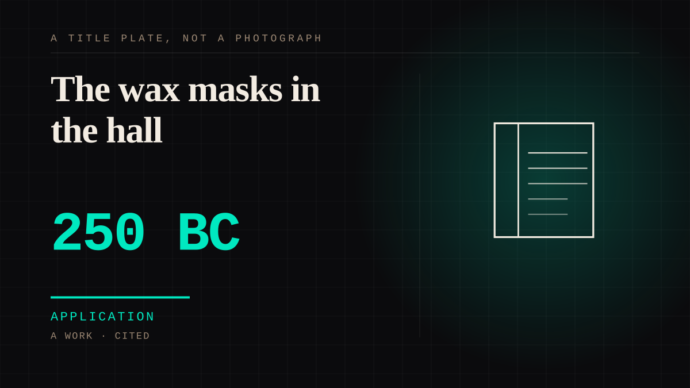

A work · 250 BC–550 · Antiquity
The wax masks in the hall
A Roman aristocrat had a wax mask of his own face taken while he was alive - usually in his thirties or forties, on taking office - and it was kept in a cupboard in the entrance hall beside a painted family tree and a label listing his offices. He never saw it worn. After his death, actors put it on and walked it in his funeral procession, in order of death, wearing the robes of the office he had held.

The best-documented one-sided attachment in this corpus, and thirteen thousand years later than the dog - which is the point. Everything here is checkable, because it was written down, and what it shows is how completely a bond can be built with someone who cannot answer. The mask never speaks: eye-holes and a gap between the lips were cut into it so that the *actor* could see and talk, and the inscription beside it did the conversing. Children grew up walking past it daily - Valerius Maximus has a man recalling that he called the dead his parents and drew his standing from their masks - and it had states: opened at festivals, hung with laurel on an election, closed during mourning. It was also an inheritance that changed address, going with a bride into her husband's house, and it was not uniformly flattering: Pliny's son was described as burdened by the masks he carried. No mask survives. All of it comes from authors.
Application. One-sided attachment put to work on purpose. Creator economies, community, fandom as infrastructure, and the things that genuinely help people. Not automatically good - a tool with an obvious use is a tool that will also get a bad one.
Where it sits
3000 BC Before 0 · 250 BC 1 BC
Provenance · 2 source record(s)
- retrievableTechnique and chronology: masks were cast from a plaster mould taken from the living face, generally between the ages of 35 and 40 and on attaining the aedileship; they were called death masks but were unquestionably made during life and only displayed after death; they were already well established by the 2nd century BC and in use into the 4th and perhaps the 6th century AD. Eyes and a strip between the lips were cut out so the actor could see and speak. No wax mask has survived and there are no ancient depictions of them, so their appearance rests entirely on literary accounts - Polybius and Pliny the Elder chiefly.Rose, C. B., & Lovink, M. (2014). Recreating Roman Wax Masks. Expedition Magazine, 56(3). Penn Museum. Originally published 1 December 2014. ↗
- retrievableThe documented mechanism, which is the useful part: masks were kept in armaria in the atrium beside tituli listing consulships, censorships and triumphs, and beside painted portraits linked into a stemma. Tacitus calls the funeral procession the pompa imaginum (Ann. 4.9), with actors in the masks and magisterial dress in order of death. Cicero Phil. 2.26 has the Bruti seeing the mask of Lucius Brutus daily; Val. Max. 5.5.praef has a man recalling that he called the dead his parents and drew equal glory from the masks; Pliny Ep. 3.3.6 describes a son being burdened by which masks he carried, and Ep. 8.10.3 hopes to leave children 'non subitas imagines' - not new masks. The armaria were opened at festivals, hung with laurel on electoral success and closed in mourning. Copies of a bride's imagines passed into her husband's house (Cic. Vat. 28; Senatus Consultum de Cn. Pisone patre 76-82, 20 CE). The right to hold imagines was customary rather than statutory.Webb, L. (2023). Gendering the Roman imago. Eugesta, 7(2017). DOI: 10.54563/eugesta.550 ↗
DIVINE The saint and the ancestor
Connected · 3 out, 1 in
It sits in
The full timeline → · The database → · See it in the atlas →